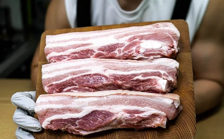
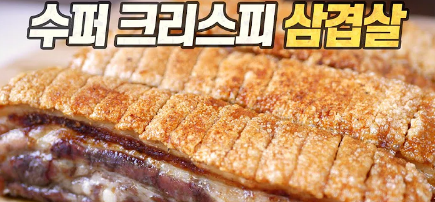
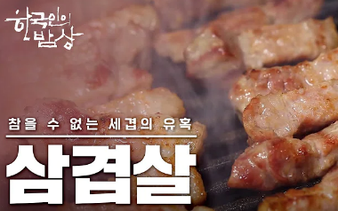

Youtube
#GOFOODA
#Kimchi
#making
GOFOODA App: Making a film for Cooking something Korean food on Youtube: JMT!! 김치찌개 만들기 레시피 공개 :) | 음식 못만든다? 선 클릭 후 고민!!
1K views 1 month ago
900
0
Share
Savs
Report
GOFOODA by 신태양
1K subscribers
subscribe
Up Next

평생 써먹는 삼겹살 굽는 방법
고기남자 MeatMan
744M

수퍼 크리스피 삼겹살 : 이 정도면 팔아야 하는 거 아닌가 싶다... 초간단 초완벽 레시피 (Crispiest Pork Belly Ever)
육식맨
133M

[한국인의 밥상] *풀영상* 삼겹살, 참을 수 없는 세겹의 즐거움♡
KBS 다큐 [KBS Documentary]
78M